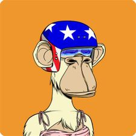
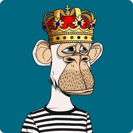
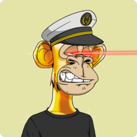
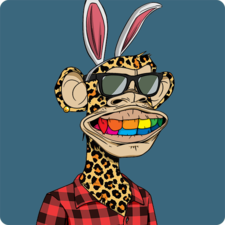

BAYC is a collection of 10,000 Bored Ape NFTs—unique digital collectibles living on the Ethereum blockchain. Your Bored Ape doubles as your Yacht Club membership card, and grants access to members-only benefits, the first of which is access to THE BATHROOM, a collaborative graffiti board. Future areas and perks can be unlocked by the community through roadmap activation.
| Apes | Price | Apes | Price |
|---|---|---|---|
|  | 149 ETH |  | 99 ETH |
|  | 25 ETH |  | 10 ETH |
Each Bored Ape is unique and programmatically generated from over 170 possible traits including expression, headwear, clothing, and more. All apes are dope, but some are rarer than others. The apes are stored as ERC-721 tokens on the Ethereum blockchain and hosted on IPFS. (See Record and Proof.)
The table below lists the original index, assigned BAYC Token ID and SHA256 Hash output of the first 5 Bored Ape images
That's the end of the page (well, almost). Don't forget: this page must validate as XHTML 1.0 Strict.
Copyright © 2022. My Awesome Enterprises International.